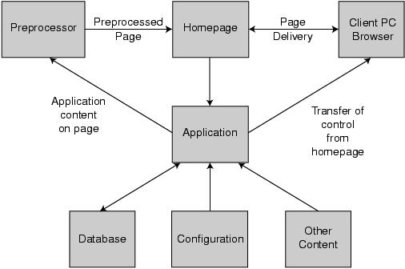

Figure 2: At the center is the application, which is fed by the database, configuration files, and content from other servers. The application page is preprocessed into the homepage, which is delivered to the site visitor's PC. Site visitors would use the homepage navigation to enter the application, where control transfers to the application.
Back to Article